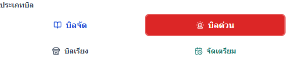
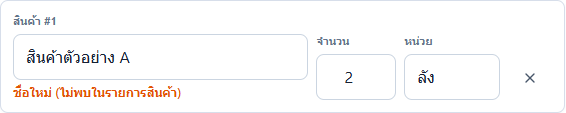
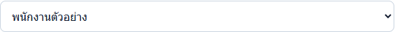
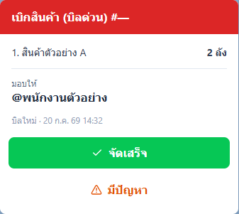
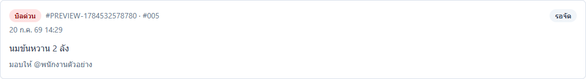
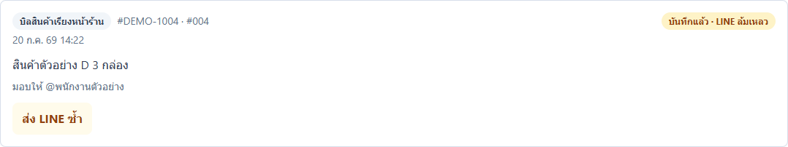

คู่มือพนักงาน · Picking — เบิกสินค้า AKRA
คู่มือทำใบเบิกสินค้า Picking
ทำใบเบิกสินค้าและส่งเข้ากลุ่ม LINE ให้ครบ ถูกต้อง และไม่เกิดบิลซ้ำ
ฉบับทดสอบภายใน: ใช้ตรวจขั้นตอนและความเข้าใจก่อนประกาศใช้
ส่วนที่ 1
เตรียมก่อนเริ่ม
- เปิดแอป Picking ผ่าน Main Portal
- เตรียมประเภทบิล รายการสินค้า จำนวน หน่วย และชื่อพนักงานจัดสินค้า
- ตรวจสอบว่าอินเทอร์เน็ตใช้งานได้
ส่วนที่ 2
ทำตามขั้นตอน
-
เปิดหน้าเบิกสินค้า
ทำ: เปิดแอป Picking แล้วเลือกแท็บ “เบิกสินค้า”
เช็ก: เห็นหัวข้อ “รายการเบิกสินค้า” และข้อความ “พร้อมทำรายการ”
เริ่มใช้งานที่หน้ารายการเบิกสินค้า ตรวจสอบว่าระบบพร้อมทำรายการ ภาพอ้างอิง Picking 20260716.04 -
เลือกประเภทบิล
ทำ: เลือก “บิลจัด”, “บิลด่วน”, “บิลเรียง” หรือ “จัดเตรียม” ให้ตรงกับงาน
เช็ก: ปุ่มที่เลือกเป็นสีแดง และหัวข้อใน “ตัวอย่าง LINE” เปลี่ยนตาม

ตัวอย่างการเลือกบิลด่วน ปุ่มจะไฮไลต์เป็นสีแดงเพื่อระบุประเภทที่กำลังใช้ ภาพอ้างอิง Picking 20260716.04 -
กรอกรายละเอียดสินค้า
ทำ: เลือกสินค้า ใส่จำนวนมากกว่า 0 และเลือกหน่วย หากมีหลายรายการให้กด “เพิ่มแถว”
เช็ก: สินค้า จำนวน และหน่วยแสดงครบใน “ตัวอย่าง LINE”

ตรวจสอบชื่อสินค้า จำนวน และหน่วยของแต่ละรายการให้ละเอียดก่อนส่ง ภาพอ้างอิง Picking 20260716.04 -
ระบุพนักงานผู้จัดสินค้า
ทำ: เลือกรายชื่อในช่อง “มอบให้พนักงาน”
เช็ก: ชื่อพนักงานแสดงหลังคำว่า “มอบให้” ใน “ตัวอย่าง LINE”

ต้องเลือกรายชื่อผู้จัดสินค้าทุกครั้งก่อนกดส่งบิลเข้ากลุ่ม ภาพอ้างอิง Picking 20260716.04 -
ตรวจสอบความถูกต้องจากช่องตัวอย่าง
ทำ: อ่านประเภทบิล สินค้า จำนวน หน่วย และชื่อพนักงานใน “ตัวอย่าง LINE”
เช็ก: ข้อมูลครบและตรงกับงานจริง ไม่มีรายการตกหล่น

กล่องตัวอย่าง LINE คือจุดตรวจรอบสุดท้ายที่พนักงานต้องยืนยันข้อมูลก่อนกดส่งจริง ภาพอ้างอิง Picking 20260716.04 -
กดส่งบิลเข้ากลุ่ม LINE
ทำ: กด “ส่งเข้า LINE กลุ่ม” เพียงครั้งเดียว แล้วรอระบบตอบกลับ
เช็ก: ฟอร์มถูกล้างและระบบแจ้งว่าบันทึกสำเร็จ หากเห็นข้อความสีเหลืองให้ไปหัวข้อ “แก้ปัญหา”
คลิกปุ่มส่งเพียงครั้งเดียวและรอการบันทึก ห้ามคลิกซ้ำหรือสร้างบิลใหม่เมื่อหน้าจอโหลดช้า ภาพอ้างอิง Picking 20260716.04 -
เช็กบิลในประวัติ
ทำ: เปิดแท็บ “ประวัติ” แล้วหาบิลล่าสุดที่เพิ่งส่ง
เช็ก: พบบิลล่าสุด พร้อมรายการสินค้าและสถานะ “รอจัด” หรือสถานะที่ระบบได้รับ

ข้อมูลบิลล่าสุด
สถานะบิล
บิลที่บันทึกสำเร็จจะอยู่ในประวัติ ให้ตรวจรายการและสถานะก่อนจบงาน ภาพอ้างอิง Picking 20260716.04
ส่วนที่ 3
เช็กก่อนจบงาน
งานเสร็จเมื่อครบทั้ง 3 ข้อ
- พบบิลล่าสุดในแท็บ “ประวัติ”
- ประเภทบิล สินค้า จำนวน หน่วย และชื่อพนักงานตรงกับงานจริง
- สถานะบิลไม่ขึ้นว่า “มีปัญหา”
ส่วนที่ 4
แก้ปัญหาที่พบบ่อย
เลือกข้อความที่ตรงกับหน้าจอ แล้วทำตามทีละข้อ
ระบบแจ้งเตือนว่า “กรุณากรอกข้อมูลในแถวสินค้าให้ครบ”
- ตรวจชื่อสินค้า จำนวน และหน่วยให้ครบทุกแถว
- ลบแถวว่างด้วยปุ่มรูปถังขยะ แล้วกดส่งใหม่
ระบบแจ้งเตือนว่า “กรุณาเลือกพนักงาน”
- เลือกชื่อพนักงานในช่อง “มอบให้พนักงาน” แล้วกดส่งใหม่
กดส่งแล้วหน้าจอค้าง โหลดช้า หรือไม่ตอบกลับ
- อย่ากดส่งซ้ำ และอย่ารีโหลดหน้า
- เปิดแท็บ “ประวัติ”
- ถ้าพบบิลล่าสุด แปลว่าส่งสำเร็จ ไม่ต้องส่งใหม่
- ถ้าไม่พบบิล ให้ดูข้อความสีเหลืองบนฟอร์มแล้วเลือกหัวข้อแก้ปัญหาที่ตรงกัน
พบบิลในประวัติ แต่ LINE ไม่เข้ากลุ่ม
- เช็กในกลุ่ม LINE ก่อนว่ามีข้อความของบิลนี้หรือยัง
- ถ้ายังไม่มี ให้เปิดบิลเดิมใน “ประวัติ” แล้วกด “ส่ง LINE ซ้ำ” ภายใน 24 ชั่วโมง
- ห้ามสร้างบิลใหม่

บิลเดิมและปุ่มส่ง LINE ซ้ำ
สถานะ LINE ล้มเหลว
เห็นข้อความสีเหลือง “พบรายการที่ยังไม่ยืนยันผล...” หรือ “ส่งไม่สำเร็จ...”
- เปิดแท็บ “ประวัติ” ก่อน
- ถ้าพบบิลล่าสุด ไม่ต้องส่งใหม่
- ถ้าไม่พบบิล กลับมาที่ฟอร์มเดิมแล้วกด “ส่งเข้า LINE กลุ่ม” อีกครั้ง
เห็นข้อความสีเหลือง “ข้อมูลที่แก้ไขยังไม่ได้บันทึก...”
- เปิด “ประวัติ” และเทียบกับบิลเดิม
- หยุดและถามหัวหน้าว่าต้องทำบิลใหม่หรือไม่
- เมื่อหัวหน้ายืนยันแล้ว จึงกลับมากดส่งข้อมูลที่แก้ไข
- ถ้ายังไม่แน่ใจ ห้ามกดส่ง
- ระบบแจ้งเตือนว่า “กรุณากรอกข้อมูลในแถวสินค้าให้ครบ”
-
- ตรวจชื่อสินค้า จำนวน และหน่วยให้ครบทุกแถว
- ลบแถวว่างด้วยปุ่มรูปถังขยะ แล้วกดส่งใหม่
- ระบบแจ้งเตือนว่า “กรุณาเลือกพนักงาน”
-
- เลือกชื่อพนักงานในช่อง “มอบให้พนักงาน” แล้วกดส่งใหม่
- กดส่งแล้วหน้าจอค้าง โหลดช้า หรือไม่ตอบกลับ
-
- อย่ากดส่งซ้ำ และอย่ารีโหลดหน้า
- เปิดแท็บ “ประวัติ”
- ถ้าพบบิลล่าสุด แปลว่าส่งสำเร็จ ไม่ต้องส่งใหม่
- ถ้าไม่พบบิล ให้ดูข้อความสีเหลืองบนฟอร์มแล้วเลือกหัวข้อแก้ปัญหาที่ตรงกัน
- พบบิลในประวัติ แต่ LINE ไม่เข้ากลุ่ม
-
- เช็กในกลุ่ม LINE ก่อนว่ามีข้อความของบิลนี้หรือยัง
- ถ้ายังไม่มี ให้เปิดบิลเดิมใน “ประวัติ” แล้วกด “ส่ง LINE ซ้ำ” ภายใน 24 ชั่วโมง
- ห้ามสร้างบิลใหม่
บิลเดิมและปุ่มส่ง LINE ซ้ำ
สถานะ LINE ล้มเหลว
ใช้ปุ่ม “ส่ง LINE ซ้ำ” จากบิลเดิมในประวัติ ห้ามทำบิลใหม่ ภาพอ้างอิง Picking 20260716.04 - เห็นข้อความสีเหลือง “พบรายการที่ยังไม่ยืนยันผล...” หรือ “ส่งไม่สำเร็จ...”
-
- เปิดแท็บ “ประวัติ” ก่อน
- ถ้าพบบิลล่าสุด ไม่ต้องส่งใหม่
- ถ้าไม่พบบิล กลับมาที่ฟอร์มเดิมแล้วกด “ส่งเข้า LINE กลุ่ม” อีกครั้ง
- เห็นข้อความสีเหลือง “ข้อมูลที่แก้ไขยังไม่ได้บันทึก...”
-
- เปิด “ประวัติ” และเทียบกับบิลเดิม
- หยุดและถามหัวหน้าว่าต้องทำบิลใหม่หรือไม่
- เมื่อหัวหน้ายืนยันแล้ว จึงกลับมากดส่งข้อมูลที่แก้ไข
- ถ้ายังไม่แน่ใจ ห้ามกดส่ง
เมื่อระบบแสดงข้อความเตือนความขัดแย้งของข้อมูล ให้ขอหัวหน้างานอนุมัติก่อนทำบิลใบใหม่เสมอ ภาพอ้างอิง Picking 20260716.04
ส่วนที่ 5
หยุดและแจ้งหัวหน้าเมื่อ
- ข้อมูลใน “ตัวอย่าง LINE” ไม่ตรงกับงานจริง
- ไม่แน่ใจว่าบิลถูกบันทึกแล้วหรือยัง
- สถานะขึ้นว่า “มีปัญหา”
- ต้องสร้างบิลใหม่จากข้อมูลที่แก้ไข